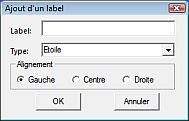
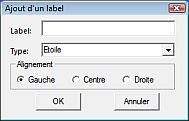

Table of Contents
Etiquettes
Etiquettes CdC
Vous configurez les étiquettes CdC par Configuration du programme > Affichage > Labels Vous pouvez modifier la police, sa taille, sa couleur et les types d'objets à étiqueter. Vous pouvez choisir le contenu des étiquettes d'étoiles et de constellations.
Modification étiquettes
Vous devez passer en “Modification labels” par l'icône  de la barre d'outil “objet”.
de la barre d'outil “objet”.
 Ensuite, quand vous faites un clic droit sur une étiquette, un menu contextuel apparait avec ces entrées :
Ensuite, quand vous faites un clic droit sur une étiquette, un menu contextuel apparait avec ces entrées :
- Move labels le curseur devient une croix et drague l'étiquette jusqu'à ce un clic gauche fixe l'étiquette à l'endroit que vous avez choisi.

- Edit labels Une fenêtre apparait et vous pouvez entrer un nouveau texte pour l'étiquette.
- Default label restaure l'étiquette d'origine et son emplacement.
- Hide label efface l'étiquette.
- Reset All labels annule toutes les modifications d'étiquettes.
Ajout d'étiquettes utilisateur
Dans le menu contextuel obtenu par un clic droit sur un objet, vous pouvez gérer les étiquettes utilisateur (voir Menu contextuel).
 
L'entrée “New label” ouvre une fenêtre “Ajout d'un label” :

L'entrée “New label” ouvre une fenêtre “Ajout d'un label” :
{kind=link}
- Label zone d'entrée du texte de l'étiquette.
- Type combo-box pour choisir le type d'objet à étiqueter.
- Alignement groupe de boutons-radio pour positionner l'étiquette par rapport à l'objet.